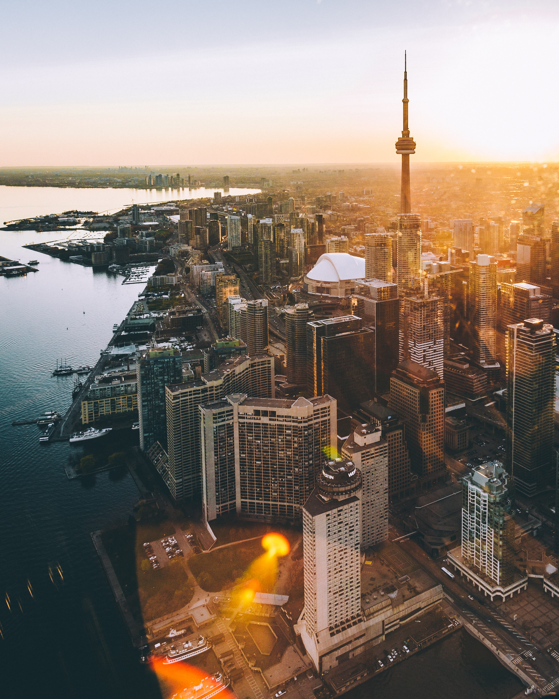
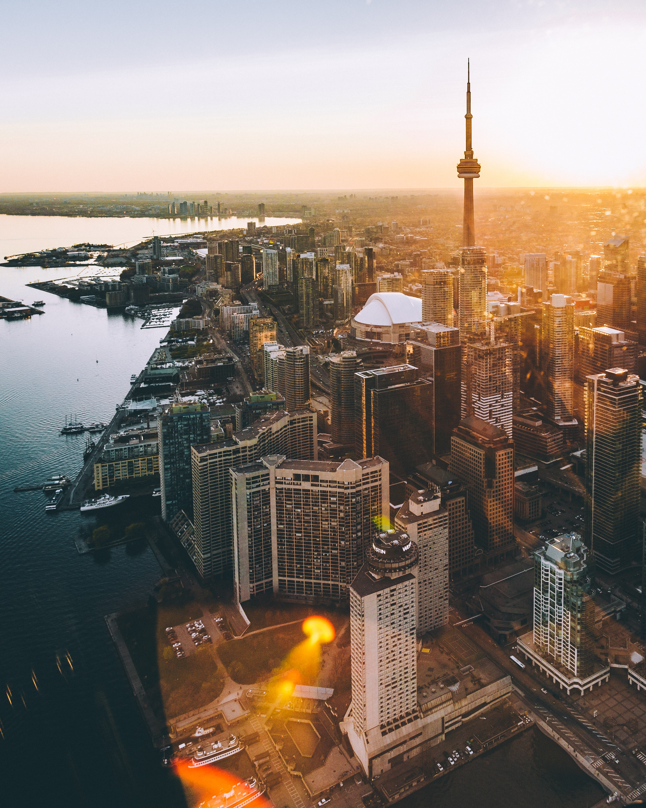
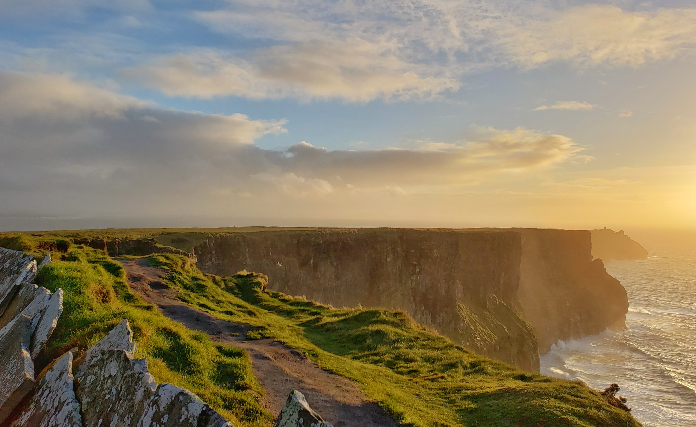
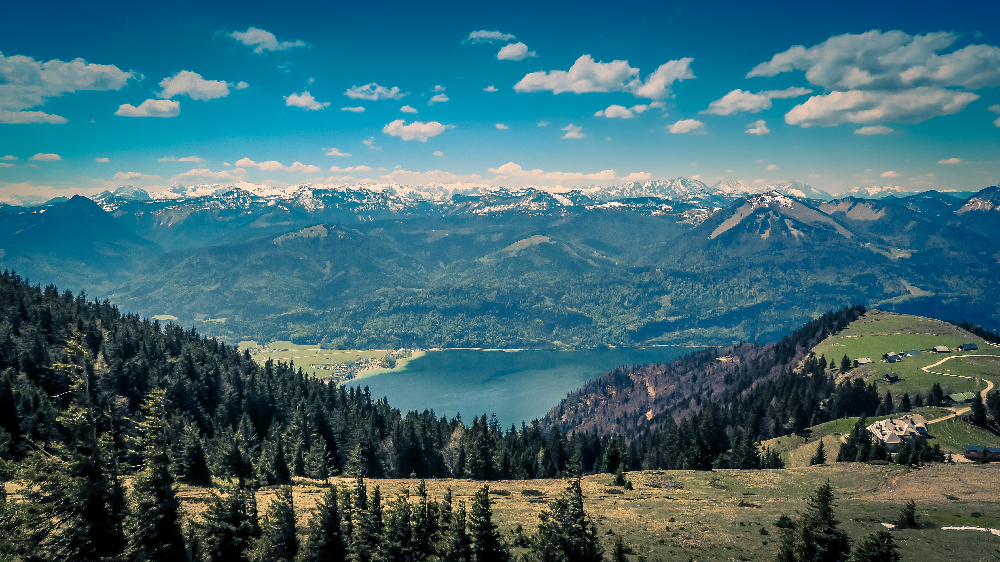
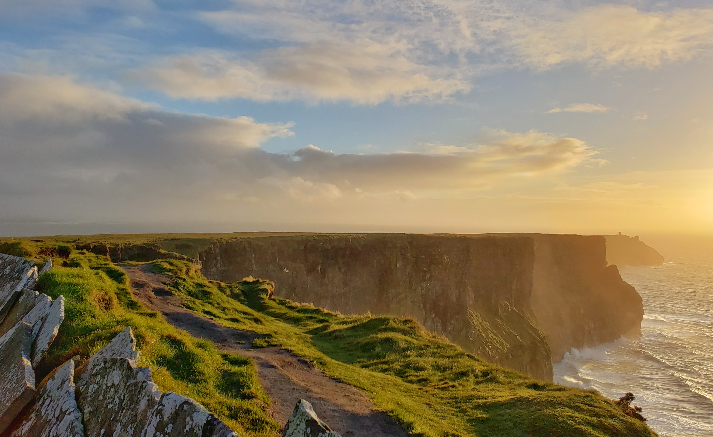
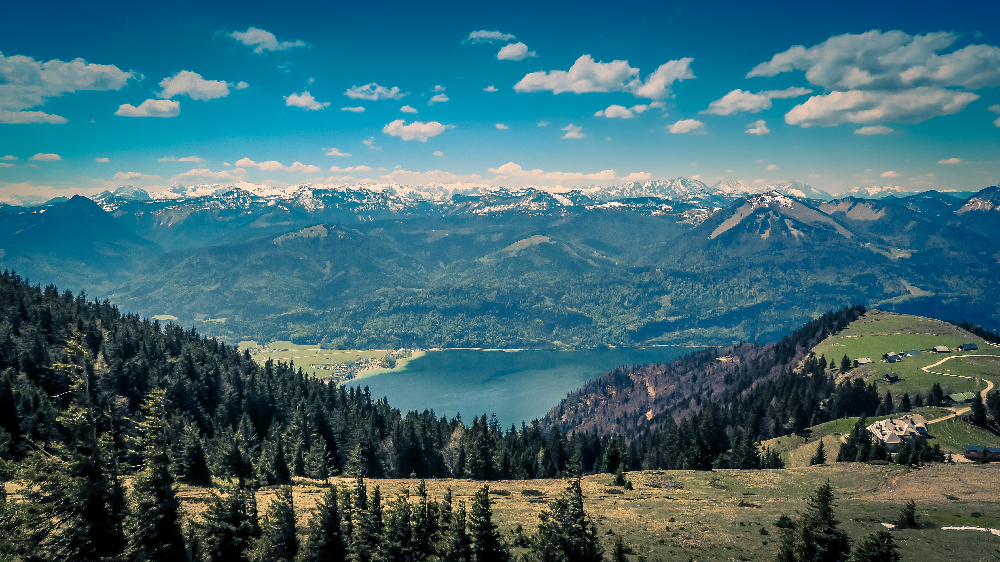
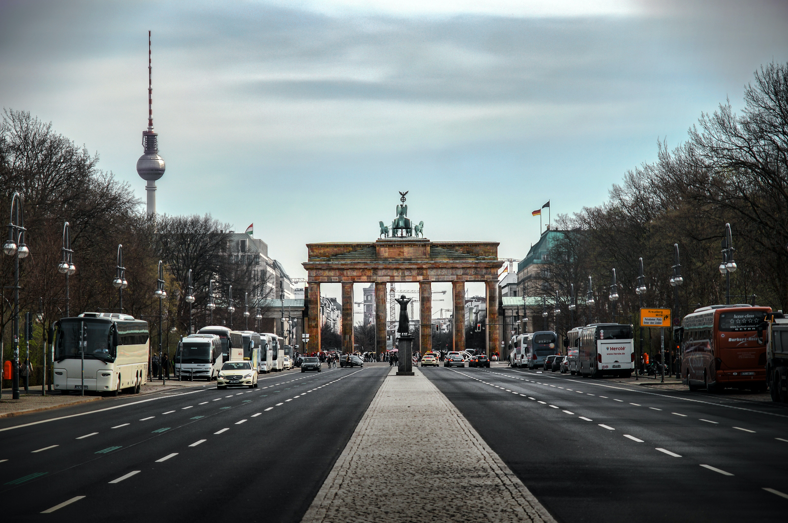
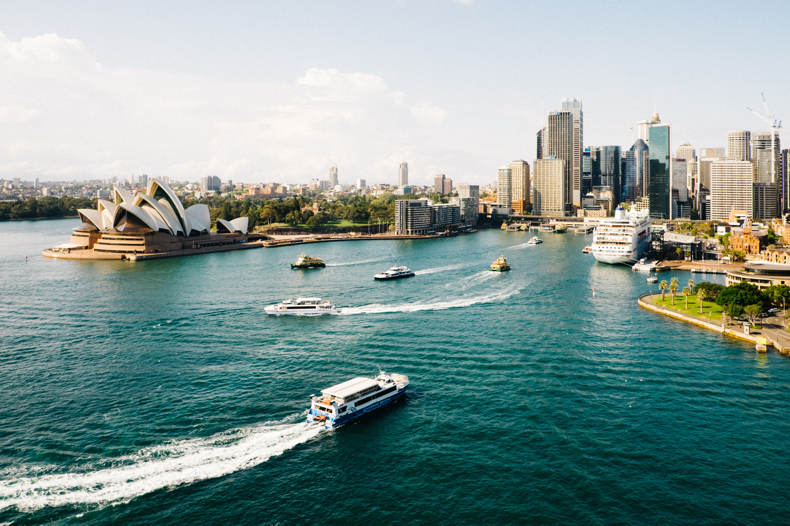
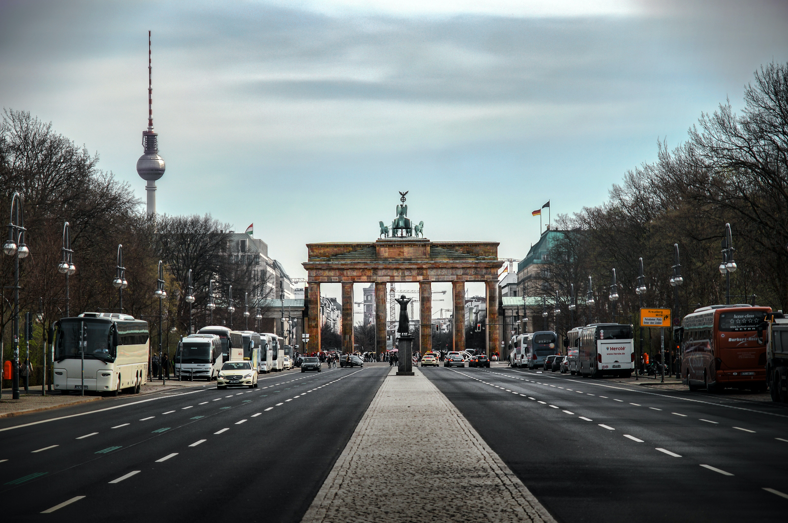
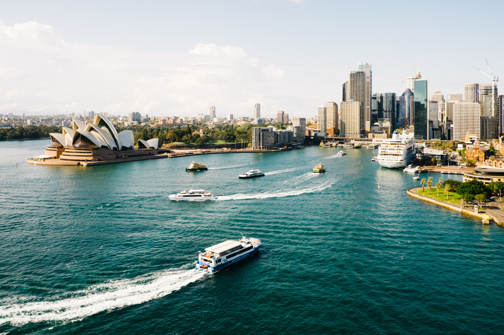

¡Atrevete a vivir una experiencia única en cada rincón del mundo!
Que te ofrecemos:
- Asesoría personalizada para elegir el destino ideal para tu experiencia.
- Orientación guiada y apoyo en el proceso de solicitud y trámite de visas y permisos necesarios.
- Acompañamiento y asistencia en cada paso de la planificación, desde la selección del programa hasta la llegada a tu destino.
- Recomendaciones sobre actividades culturales, eventos y lugares de interés en el destino para aprovechar al máximo tu experiencia.
- Asistencia en la obtención de seguros de viaje y cobertura médica adecuada durante tu estadía.
- Creación de redes y comunidad con otros participantes de programas similares, brindando oportunidades de conexión y enriquecimiento mutuo.

 


 



 


